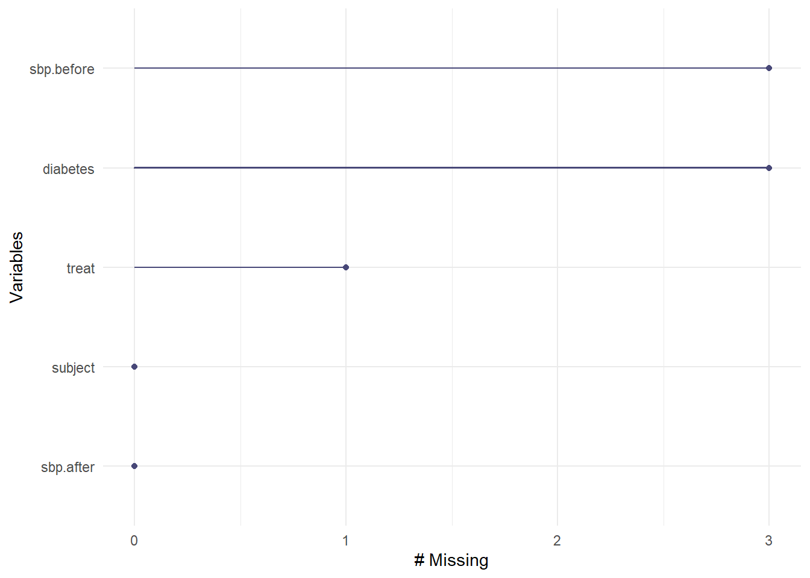

knitr::opts_chunk$set(comment = NA)
library(janitor)
library(naniar)
library(simputation)
library(tidyverse)
theme_set(theme_bw())9 Missing Data and Single Imputation
Almost all serious statistical analyses have to deal with missing data. Data values that are missing are indicated in R, and to R, by the symbol NA.
9.1 Setup: Packages Used Here
We’ll focus on tools from the naniar and simputation packages in this chapter. This chapter also requires that the mosaic package is loaded on your machine so we can use the favstats() function, but I won’t load that here.
9.2 A Toy Example (n = 15)
In the following tiny data set called sbp_example, we have four variables for a set of 15 subjects. In addition to a subject id, we have:
- the treatment this subject received (A, B or C are the treatments),
- an indicator (1 = yes, 0 = no) of whether the subject has diabetes,
- the subject’s systolic blood pressure at baseline
- the subject’s systolic blood pressure after the application of the treatment
# create some temporary variables
subject <- 101:115
x1 <- c("A", "B", "C", "A", "C", "A", "A", NA, "B", "C", "A", "B", "C", "A", "B")
x2 <- c(1, 0, 0, 1, NA, 1, 0, 1, NA, 1, 0, 0, 1, 1, NA)
x3 <- c(120, 145, 150, NA, 155, NA, 135, NA, 115, 170, 150, 145, 140, 160, 135)
x4 <- c(105, 135, 150, 120, 135, 115, 160, 150, 130, 155, 140, 140, 150, 135, 120)
sbp_example <-
tibble(subject, treat = factor(x1), diabetes = x2,
sbp.before = x3, sbp.after = x4)
rm(subject, x1, x2, x3, x4) # just cleaning up
sbp_example# A tibble: 15 × 5
subject treat diabetes sbp.before sbp.after
<int> <fct> <dbl> <dbl> <dbl>
1 101 A 1 120 105
2 102 B 0 145 135
3 103 C 0 150 150
4 104 A 1 NA 120
5 105 C NA 155 135
6 106 A 1 NA 115
7 107 A 0 135 160
8 108 <NA> 1 NA 150
9 109 B NA 115 130
10 110 C 1 170 155
11 111 A 0 150 140
12 112 B 0 145 140
13 113 C 1 140 150
14 114 A 1 160 135
15 115 B NA 135 1209.3 Identifying missingness with naniar functions
The naniar package has many useful functions.
- How many missing values do we have, overall?
n_miss(sbp_example)[1] 7- How many variables have missing values, overall?
n_var_miss(sbp_example)[1] 3- Which variables contain missing values?
miss_var_which(sbp_example)[1] "treat" "diabetes" "sbp.before"- How many missing values do we have in each variable?
miss_var_summary(sbp_example)# A tibble: 5 × 3
variable n_miss pct_miss
<chr> <int> <dbl>
1 diabetes 3 20
2 sbp.before 3 20
3 treat 1 6.67
4 subject 0 0
5 sbp.after 0 0 We are missing one treat, 3 diabetes and 3 sbp.before values.
- Can we plot missingness, by variable?
gg_miss_var(sbp_example)
- How many of the cases (rows) have missing values?
n_case_miss(sbp_example)[1] 6- How many cases have complete data, with no missing values?
n_case_complete(sbp_example)[1] 9- Can we tabulate missingness by case?
miss_case_table(sbp_example)# A tibble: 3 × 3
n_miss_in_case n_cases pct_cases
<int> <int> <dbl>
1 0 9 60
2 1 5 33.3
3 2 1 6.67- Which cases have missing values?
miss_case_summary(sbp_example)# A tibble: 15 × 3
case n_miss pct_miss
<int> <int> <dbl>
1 8 2 40
2 4 1 20
3 5 1 20
4 6 1 20
5 9 1 20
6 15 1 20
7 1 0 0
8 2 0 0
9 3 0 0
10 7 0 0
11 10 0 0
12 11 0 0
13 12 0 0
14 13 0 0
15 14 0 0- How can we identify the subjects with missing data?
sbp_example |> filter(!complete.cases(sbp_example))# A tibble: 6 × 5
subject treat diabetes sbp.before sbp.after
<int> <fct> <dbl> <dbl> <dbl>
1 104 A 1 NA 120
2 105 C NA 155 135
3 106 A 1 NA 115
4 108 <NA> 1 NA 150
5 109 B NA 115 130
6 115 B NA 135 120We have nine subjects with complete data, three subjects with missing diabetes (only), two subjects with missing sbp.before (only), and 1 subject who is missing both treat and sbp.before.
9.4 Missing-data mechanisms
My source for this description of mechanisms is Chapter 25 of Gelman and Hill (2007), and that chapter is available at this link.
- MCAR = Missingness completely at random. A variable is missing completely at random if the probability of missingness is the same for all units, for example, if for each subject, we decide whether to collect the
diabetesstatus by rolling a die and refusing to answer if a “6” shows up. If data are missing completely at random, then throwing out cases with missing data does not bias your inferences. - Missingness that depends only on observed predictors. A more general assumption, called missing at random or MAR, is that the probability a variable is missing depends only on available information. Here, we would have to be willing to assume that the probability of nonresponse to
diabetesdepends only on the other, fully recorded variables in the data. It is often reasonable to model this process as a logistic regression, where the outcome variable equals 1 for observed cases and 0 for missing. When an outcome variable is missing at random, it is acceptable to exclude the missing cases (that is, to treat them as NA), as long as the regression controls for all the variables that affect the probability of missingness. - Missingness that depends on unobserved predictors. Missingness is no longer “at random” if it depends on information that has not been recorded and this information also predicts the missing values. If a particular treatment causes discomfort, a patient is more likely to drop out of the study. This missingness is not at random (unless “discomfort” is measured and observed for all patients). If missingness is not at random, it must be explicitly modeled, or else you must accept some bias in your inferences.
- Missingness that depends on the missing value itself. Finally, a particularly difficult situation arises when the probability of missingness depends on the (potentially missing) variable itself. For example, suppose that people with higher earnings are less likely to reveal them.
Essentially, situations 3 and 4 are referred to collectively as non-random missingness, and cause more trouble for us than 1 and 2.
9.5 Dealing with Missingness: Three Approaches
There are several available methods for dealing with missing data that are MCAR or MAR, but they basically boil down to:
- Complete Case (or Available Case) analyses
- Single Imputation
- Multiple Imputation
9.6 Complete Case (and Available Case) analyses
In Complete Case analyses, rows containing NA values are omitted from the data before analyses commence. This is the default approach for many statistical software packages, and may introduce unpredictable bias and fail to include some useful, often hard-won information.
- A complete case analysis can be appropriate when the number of missing observations is not large, and the missing pattern is either MCAR (missing completely at random) or MAR (missing at random.)
- Two problems arise with complete-case analysis:
- If the units with missing values differ systematically from the completely observed cases, this could bias the complete-case analysis.
- If many variables are included in a model, there may be very few complete cases, so that most of the data would be discarded for the sake of a straightforward analysis.
- A related approach is available-case analysis where different aspects of a problem are studied with different subsets of the data, perhaps identified on the basis of what is missing in them.
9.7 Building a Complete Case Analysis
We can drop all of the missing values from a data set with drop_na or with na.omit or by filtering for complete.cases. Any of these approaches produces the same result - a new data set with 9 rows (after dropping the six subjects with any NA values) and 5 columns.
cc.1 <- na.omit(sbp_example)
cc.2 <- sbp_example |> drop_na()
cc.3 <- sbp_example |> filter(complete.cases(sbp_example))9.8 Single Imputation
In single imputation analyses, NA values are estimated/replaced one time with one particular data value for the purpose of obtaining more complete samples, at the expense of creating some potential bias in the eventual conclusions or obtaining slightly less accurate estimates than would be available if there were no missing values in the data.
- A single imputation can be just a replacement with the mean or median (for a quantity) or the mode (for a categorical variable.) However, such an approach, though easy to understand, underestimates variance and ignores the relationship of missing values to other variables.
- Single imputation can also be done using a variety of models to try to capture information about the NA values that are available in other variables within the data set.
- The
simputationpackage can help us execute single imputations using a wide variety of techniques, within the pipe approach used by thetidyverse. Another approach I have used in the past is themicepackage, which can also perform single imputations.
9.9 Single Imputation with the Mean or Mode
The most straightforward approach to single imputation is to impute a single summary of the variable, such as the mean, median or mode.
mosaic::favstats(~ sbp.before, data = sbp_example) min Q1 median Q3 max mean sd n missing
115 135 145 151.25 170 143.3333 15.71527 12 3sbp_example |> tabyl(diabetes, treat) |>
adorn_totals(where = c("row", "col")) diabetes A B C NA_ Total
0 2 2 1 0 5
1 4 0 2 1 7
<NA> 0 2 1 0 3
Total 6 4 4 1 15Here, suppose we decide to impute
sbp.beforewith the mean (143.3) among non-missing values,diabeteswith its more common value, 1, andtreatwith its more common value, or mode (A)
si.1 <- sbp_example |>
replace_na(list(sbp.before = 143.33,
diabetes = 1,
treat = "A"))
si.1# A tibble: 15 × 5
subject treat diabetes sbp.before sbp.after
<int> <fct> <dbl> <dbl> <dbl>
1 101 A 1 120 105
2 102 B 0 145 135
3 103 C 0 150 150
4 104 A 1 143. 120
5 105 C 1 155 135
6 106 A 1 143. 115
7 107 A 0 135 160
8 108 A 1 143. 150
9 109 B 1 115 130
10 110 C 1 170 155
11 111 A 0 150 140
12 112 B 0 145 140
13 113 C 1 140 150
14 114 A 1 160 135
15 115 B 1 135 1209.10 Doing Single Imputation with simputation
Single imputation is a potentially appropriate method when missingness can be assumed to be either completely at random (MCAR) or dependent only on observed predictors (MAR). We’ll use the simputation package to accomplish it.
- The
simputationvignette is available at https://cran.r-project.org/web/packages/simputation/vignettes/intro.html - The
simputationreference manual is available at https://cran.r-project.org/web/packages/simputation/simputation.pdf
Suppose we wanted to use:
- a robust linear model to predict
sbp.beforemissing values, on the basis ofsbp.afteranddiabetesstatus, and - a predictive mean matching approach (which, unlike the robust linear model, will ensure that only values of
diabetesthat we’ve seen before will be imputed) to predictdiabetesstatus, on the basis ofsbp.after, and - a decision tree approach to predict
treatstatus, using all other variables in the data
set.seed(432009)
imp.2 <- sbp_example |>
impute_rlm(sbp.before ~ sbp.after + diabetes) |>
impute_pmm(diabetes ~ sbp.after) |>
impute_cart(treat ~ .)
imp.2# A tibble: 15 × 5
subject treat diabetes sbp.before sbp.after
* <int> <fct> <dbl> <dbl> <dbl>
1 101 A 1 120 105
2 102 B 0 145 135
3 103 C 0 150 150
4 104 A 1 139. 120
5 105 C 1 155 135
6 106 A 1 136. 115
7 107 A 0 135 160
8 108 A 1 155. 150
9 109 B 1 115 130
10 110 C 1 170 155
11 111 A 0 150 140
12 112 B 0 145 140
13 113 C 1 140 150
14 114 A 1 160 135
15 115 B 1 135 120Details on the many available methods in simputation are provided in its manual. These include:
impute_cartuses a Classification and Regression Tree approach for numerical or categorical data. There is also animpute_rfcommand which uses Random Forests for imputation.impute_pmmis one of several “hot deck” options for imputation, this one is predictive mean matching, which can be used with numeric data (only). Missing values are first imputed using a predictive model. Next, these predictions are replaced with the observed values which are nearest to the prediction. Other imputation options in this group include random hot deck, sequential hot deck and k-nearest neighbor imputation.impute_rlmis one of several regression imputation methods, including linear models, robust linear models (which use what is called M-estimation to impute numerical variables) and lasso/elastic net/ridge regression models.
The simputation package can also do EM-based multivariate imputation, and multivariate random forest imputation, and several other approaches.
9.11 Multiple Imputation
Multiple imputation, where NA values are repeatedly estimated/replaced with multiple data values, for the purpose of obtaining mode complete samples and capturing details of the variation inherent in the fact that the data have missingness, so as to obtain more accurate estimates than are possible with single imputation.
- We’ll postpone further discussion of multiple imputation to later in the semester, when we’re building models for relationships in our data.
9.12 Coming Up
Next, we’ll look an even more detailed look at how we might summarize results from another large data set, this time from the National Youth Fitness Survey.